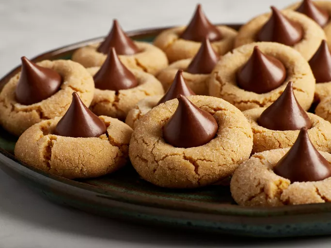

Peanut Butter Cookies

Desciption
Peanut butter blossoms are always a crowd-pleasing choice. Plus, they're easy to make with kitchen staples!
Ingredients
- 1 cup shortening
- 1 cup peanut butter
- 1 cup packed brown sugar
1 ½ cups white sugar, divided
Recipe
- PPreheat the oven to 375 degrees F (190 degrees C). Grease cookie sheets.
- Cream together shortening, peanut butter, brown sugar, and 1 cup white sugar in a large bowl until smooth.
- Beat in eggs one at a time, then stir in milk and vanilla.
- Combine flour, baking soda, and salt; stir into peanut butter mixture until well blended.
- Shape spoonfuls of dough into balls and roll in remaining 1/2 cup white sugar. Place cookies 2 inches apart on the prepared cookie sheets.
- Bake in the preheated oven for 10 to 12 minutes. Remove from the oven and immediately press a chocolate kiss into each cookie.
- Allow to cool completely; the kiss will harden as it cools.